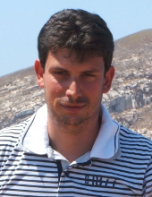

Marco Beccuti |
|

Marco Beccuti received his Ph.D. degree in Computer Science from University of Torino and Universitè of Paris Dauphine in January 2008. From January 2008 to December 2008, he was a research assistant at "Consorzio Nazionale Interuniversitario per le Telecomunicazioni" (CNIT). From March 2009 to October 2012 he was a research assistant at the Dipartimento di Informatica of the Università degli Studi di Torino. In April 2017, he obtained the National scientific qualification to function as Associate Professor in Italian Universities (Area: Computer science 01/B1 and Computer Engineering 09/H1). Currently, he is assistant professor with tenure track at Dipartimento di Informatica of the Università degli Studi di Torino and technical coordinator of ELIXIR Node of the Università degli Studi di Torino. He is also member of "Quantitative Biology" (q-Bio) group, of the "Performance Evaluation and System Validation" group (QMIPS), of "Bioinformatics ITalian Society" (BITS), and of the "Consorzio Nazionale Interuniversitario per le Telecomunicazioni" (CNIT). From 2015, he is involved in bioinformatics training courses at EMBL (Heidelberg) and several courses about NGS data analysis and reproducible bioinformatic analysis in Italy.
His research is currently mainly focused on computational modeling and simulation of complex systems.
In particular he is interested in: 1)Stochastic and hybrid modeling languages; 2)Exact and approximated techniques to analysis the behavior of complex systems; 3)Applications to computational Systems Biology.
Moreover he works on design of bioinformatics algorithms and workflows for the analysis of deep sequencing data (i.e. genomic, transcriptomic and single cell data) with particular emphasis on reproducibility aspects.
|